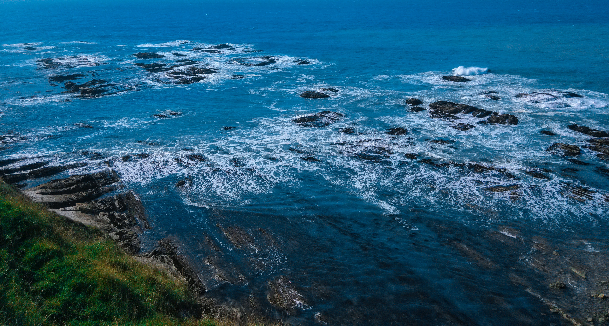
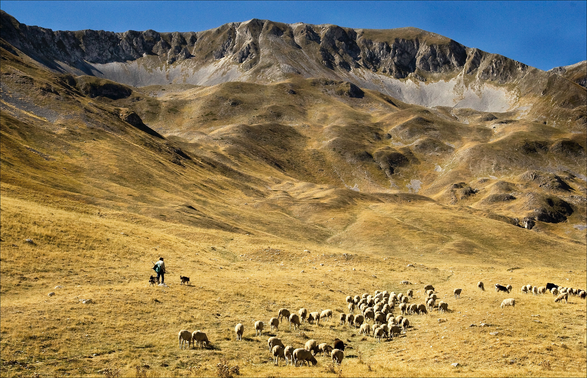

Bali, Indonesia

Bali is a province of Indonesia and the westernmost of the Lesser Sunda
Islands. East of Java and west of Lombok, the province includes the
island of Bali and a few smaller neighbouring islands, notably Nusa
Penida, Nusa Lembongan, and Nusa Ceningan.
Read More
South Island, New Zealand

The South Island of New Zealand is renowned for its mountains, lakes and
glaciers. The Southern Alps, home to 3,724m-high Aoraki Mt. Cook, run
along the entire length of the island. In the southwest is Fiordland
National Park, with steep-sided Milford Sound. In the north is Abel
Tasman National Park, known for its trails and ocean kayaking.
Queenstown is famed for adventure sports like bungee jumping and skiing.
Read More
Abruzzo, Italy

Abruzzo is an Italian region, east of Rome, with an Adriatic coastline
and the Apennine Mountains. National parks and nature reserves cover
much of its rugged interior. It also encompasses hilltop towns, dating
to the medieval and Renaissance periods. Regional capital L’Aquila is a
walled city, damaged in a 2009 earthquake. The Trabocchi Coast, with
sandy coves, is named after its traditional wooden fishing piers.
Read More